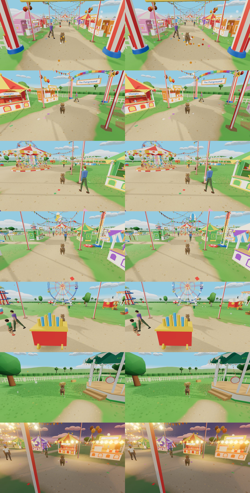

Left: before (main + areas-slim). Right: after (tools/verify/verify-fair.html, same shots, same clock). Rows: the arrival (walking in under the gate: a puff of confetti and a ticket-bell); pigeons and sparrows by the popcorn stall; a stray ginger cat watching the merry-go-round; the reworked balloon (round, striped envelope, basket and ropes); the big wheel's welcome sparkle round its rim; ladybirds on the hay bales; moths round the bulbs at dusk. Also not visible in a still: one wind for steam, confetti, lanterns and the balloon; pennants flutter on the calliope's bar; the lights pulse harder on its downbeat; sound beds that cross-fade by zone.
Honest note: the gate puff, the balloon and the stray are clear at play distance. The wheel sparkle is faint, and the birds, ladybirds and moths are only a few pixels from the play camera (they read when she is close, or in motion); they are small pooled dots, not rigs.
